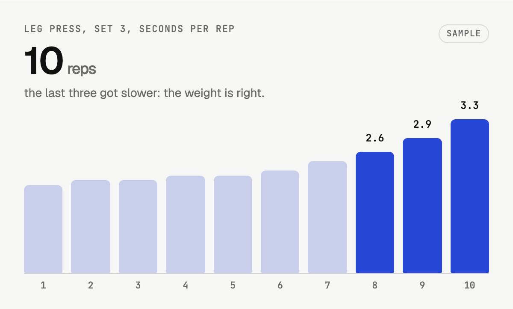
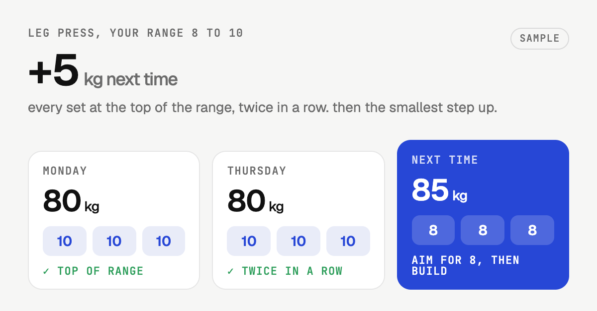
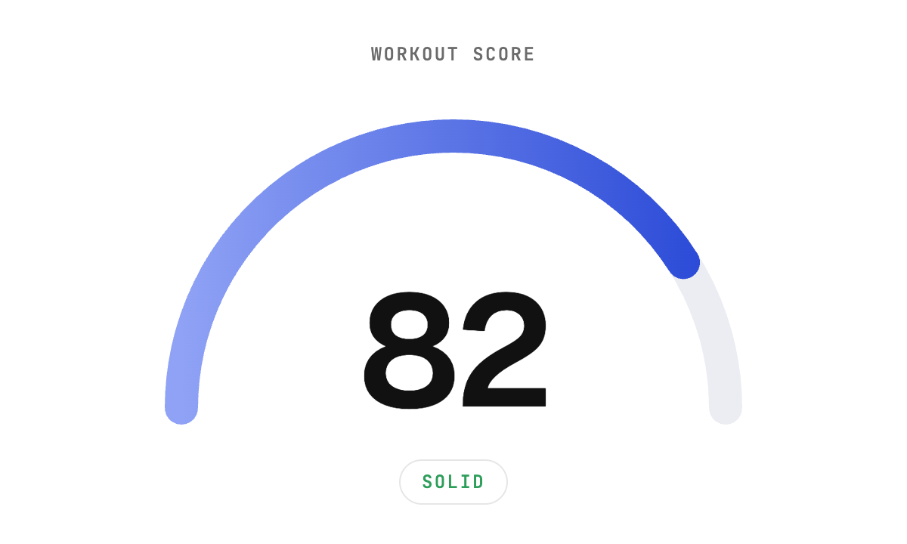

| readout | YOUR TRAINING, MEASURED |
| how readout works What the sensor reads.It sits on the weight stack and reads the stack’s movement. Four readings come out of it, and each one comes with a sentence that says what it means. | | four readings From the stack to your next set. Each rep is one rise and fall of the stack. The last reps of a hard set get slower, and the sensor sees that too. Why it matters: slow last reps mean the weight is right. Fast ones to the end mean it’s light. |
 The clock starts when the stack lands and stops when you lift again. No stopwatch, no phone. Why it matters: rest decides how much you can lift in the next set. |
 Every set at the top of your range, twice in a row. Then the smallest step up. Why it matters: steady progress, without guessing when. |
 One number from 0 to 100 for every workout, with the parts that made it. Why it matters: one number to beat next time. |
| how we check the count Every count, checked by hand. | FilmEvery set on the test machines is filmed, start to finish. | | Count by handTwo people count the reps on the video, without seeing what the sensor said. | | CompareTheir count goes next to the sensor’s. Every miss is kept and shown. |
| SET | BY HAND | SENSOR | RESULT |
|---|
| Leg press, set 1 | 10 | 10 | MATCH | | Leg press, set 2 | 10 | 10 | MATCH | | Lat pulldown, set 1 | 12 | 11 | MISSED 1 | | Chest press, set 3 | 8 | 8 | MATCH |
Sample rows. The real results go up when the test runs: 1,000 reps, misses included. |
| | 1,000reps counted twice | | 0taps during a set | | 90days in public |
Or try the app in your browser | Measured, then explained,
the readout team When the sensor gets it wrong, we say so. | readout YOUR TRAINING, MEASURED The app / The open lab / Privacy You’re getting this because you joined the readout list. Unsubscribe in one click.
Our first gym, Brno, Czechia. readout is a working name; numbers marked sample are samples. |
|